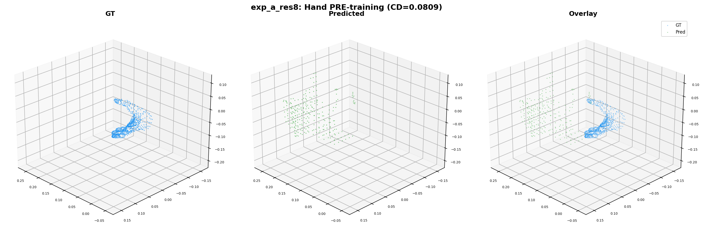
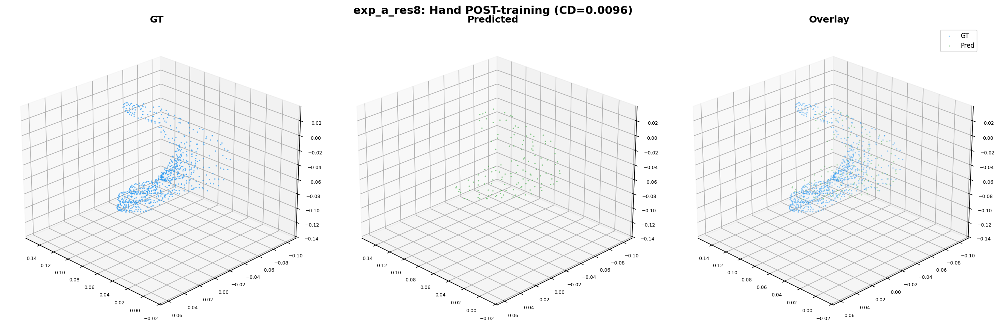
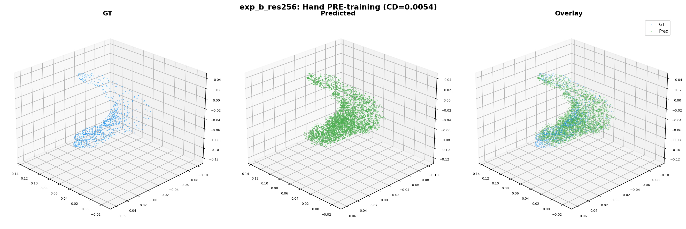
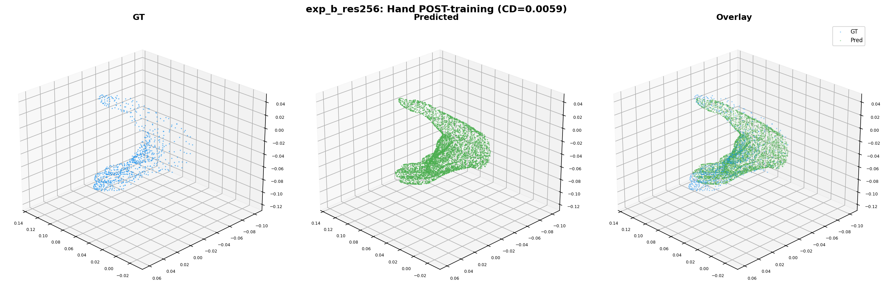
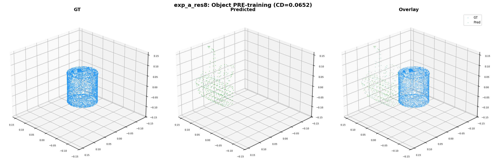
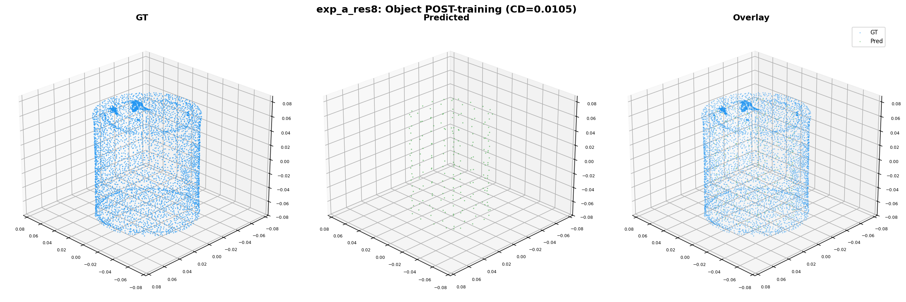
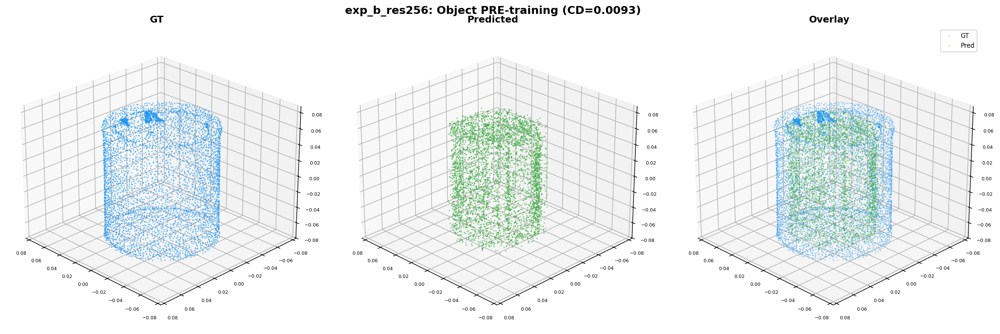
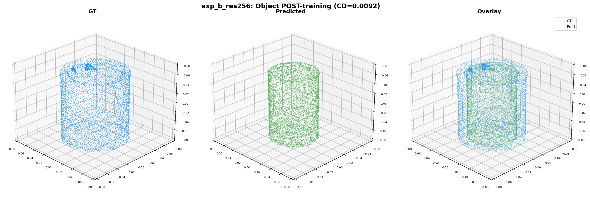

Goal: Validate sparse resolution 256, trainable decoder, and Triton backward-pass fix using chamfer distance and mesh visualizations.
Two overfit experiments on the same DexYCB frame, differing in sparse resolution and decoder trainability:
| Config | Exp A (Baseline) | Exp B (New) |
|---|---|---|
| Sparse resolution | 8 | 256 |
| Decoder mode | Frozen / eval-mode | Trainable / fp32 / explicit_gemm |
| Trainable params | 584M | 1,058M |
| Loss | Latent recon (L2) + KL | |
| GT hand verts | 778 (MANO mesh) | |
| GT object verts | 7,678 (YCB mesh) | |
Chamfer L1 distance computed in GT canonical space (predicted vertices denormalized via denormalize_vertices_from_reference_bounds):
| Metric | Exp A (res=8) | Exp B (res=256) | Winner |
|---|---|---|---|
| Pre-opt chamfer (hand) | 0.0809 | 0.0054 | B (15x better) |
| Post-opt chamfer (hand) | 0.0096 | 0.0059 | B (1.6x better) |
| Pre-opt chamfer (object) | 0.0652 | 0.0093 | B (7x better) |
| Post-opt chamfer (object) | 0.0106 | 0.0092 | B (1.2x better) |
Chamfer distance over training steps:
| Step | A: CD hand | A: CD obj | B: CD hand | B: CD obj |
|---|---|---|---|---|
| 1 | 0.0756 | 0.0514 | 0.0054 | 0.0095 |
| 50 | 0.0095 | 0.0104 | 0.0059 | 0.0093 |
| 100 | 0.0096 | 0.0105 | 0.0059 | 0.0092 |
| 200 | 0.0098 | 0.0106 | 0.0059 | 0.0092 |
GT (blue) vs predicted (green) mesh point clouds for the hand branch.

Pre-training: scattered sparse points (57 vertices at res=8). Nowhere close to GT hand shape.

Post-training (200 steps): 139 vertices, chamfer=0.0096. Coarse blob, rough hand outline but no finger detail.

Pre-training: dense mesh (66K vertices), chamfer=0.0054. Already recognizable hand shape.

Post-training (200 steps): 170K vertices, chamfer=0.0059. Clean hand shape aligned with GT.

Pre-training: 149 vertices. Tiny point cluster, no recognizable object shape.

Post-training: 197 vertices, chamfer=0.0106. Sparse blob with no recognizable structure.

Pre-training: 122K vertices, chamfer=0.0093. Recognizable box shape matching GT object.

Post-training: 264K vertices, chamfer=0.0092. Dense mesh with object geometry preserved.
Resolution 8 collapses hand/object to ~100-200 point blobs with pre-opt chamfer 0.08. Resolution 256 produces dense meshes with pre-opt chamfer 0.005 (15x better) that visually match GT shapes from initialization.
The decoder runs in training mode with fp32 precision and explicit_gemm backend for 200 steps without errors. Gradients flow through decoder conv weights. Three Triton bugs resolved: signedness mismatch in tl.cdiv, dtype mismatch in tl.dot, uint32 torch.flip.
Both experiments show flat or slightly worse object chamfer after training. The latent recon loss optimizes token bridge projections but does not directly target mesh surface distance. Direct mesh supervision (chamfer loss backpropagated through the decoder) is needed for the next phase.
| # | Change | Status | Evidence |
|---|---|---|---|
| 1 | Sparse resolution 8 → 256 | PASS | Post-opt chamfer: hand 0.0096 → 0.0059 (1.6x), pre-opt 15x better |
| 2 | Unfreeze global blocks | PASS | Already unfrozen; verified requires_grad=True |
| 3 | Training-mode decoder path | PASS | 200 steps stable, subs_gt/subs available for supervision |
| 4 | Enhanced mesh supervision losses | WIRED | Code added; chamfer backprop through decoder is next step |
| 5 | Triton flex_gemm backward fix | PASS | fp32 + explicit_gemm eliminates all 3 Triton bugs |
TrellisGeometryLoss depth/normal rendering in training mode.